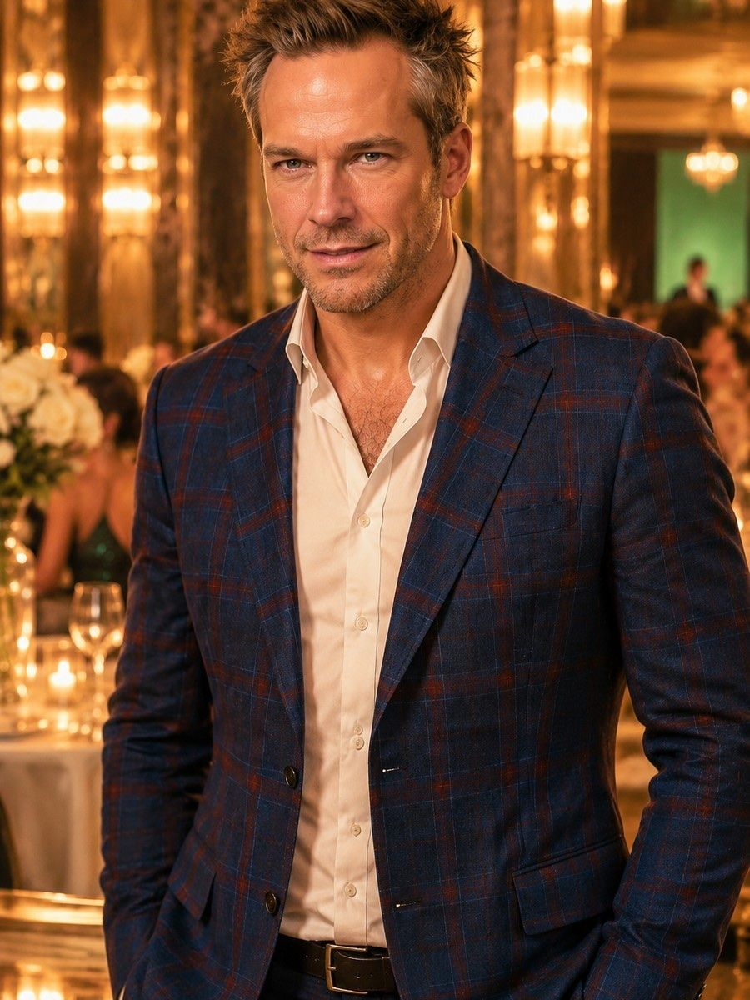
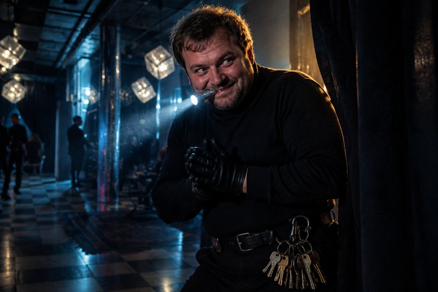
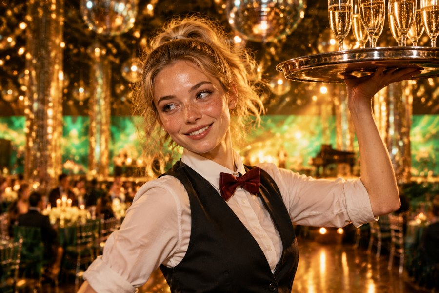
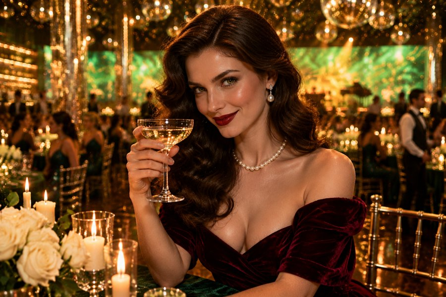
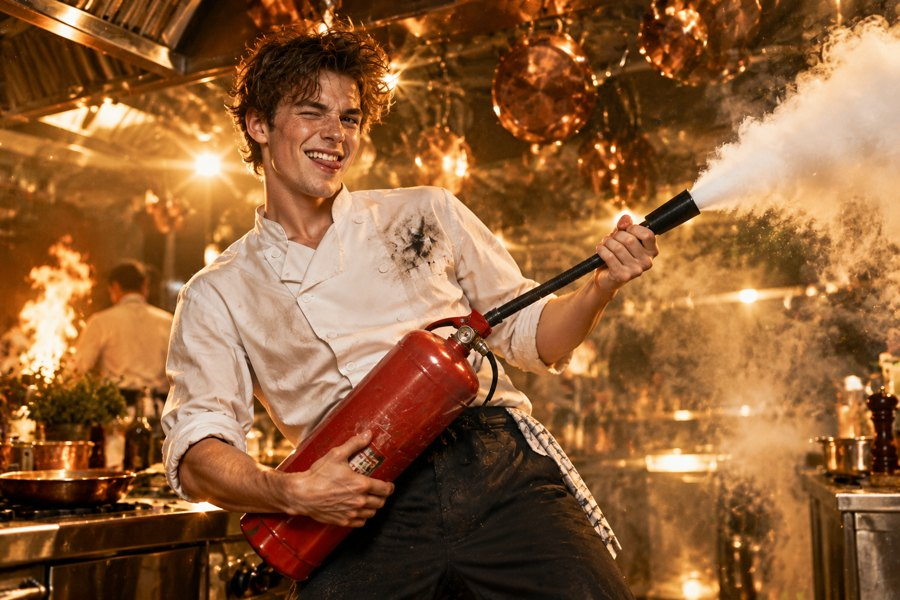

Команда
Кто делает этот вечер
Герои истории, актёры, постановочная группа — все, кто выходит к вам в Метелице.
Герои
Лица истории
Ксюша
Шеф и хозяйка ресторана мечты. Знает, чего хочет, и не боится начать с нуля.

Витя
Её бывший, теперь — владелец ресторана по соседству. После удара током слышит, о чём молчат женщины.

Боря
Друг и сообщник Вити. С отвёрткой, фонариком и планом, который пошёл не по плану.

Лиза
Официантка, которой хоть раз хочется, чтобы налили ей.

Прасковья
Мечтает станцевать на столе — как в девяносто девятом.

Вовочка
Самый честный человек в зале.
Создатели
Постановочная группа
Песни о любви 90-х и 2000-х в новых аранжировках с живым бэндом. Продюсер — медиагруппа «Красный квадрат».
[состав и фото — womanmusical.ru/team, сверка 01.11; состав по датам — уточнить у КК]
Актёрский состав
Кто играет
Роли играют в очередь — состав конкретного вечера объявляется ближе к дате. Нажмите на фото, чтобы прочитать об артисте.
Ксюша
Витя
Боря
Лиза
Катя, дочь Вити
Вовочка и Дядя Вова
Ансамбль
Цирк

Ближайшие показы
Выберите свой вечер
Гастрошоу о том, о чём молчат женщины, хиты 90–2000-х живьём и авторский ужин — три блюда и десерт — за вашим столом.

Пробуй. Пой. Танцуй.
- 1Датавыберите вечер ниже
- 2Местона схеме зала в кассе
- 3Ужин+2 100 ₽ за сет, в той же покупке
- 4Оплатаместо от 3 500 ₽ + ужин 2 100 ₽
Нажмите на дату — откроется касса Яндекс Афиши: выберите места на схеме зала, для каждого места — сет ужина (мясной, рыбный или вегетарианский), и оплатите.